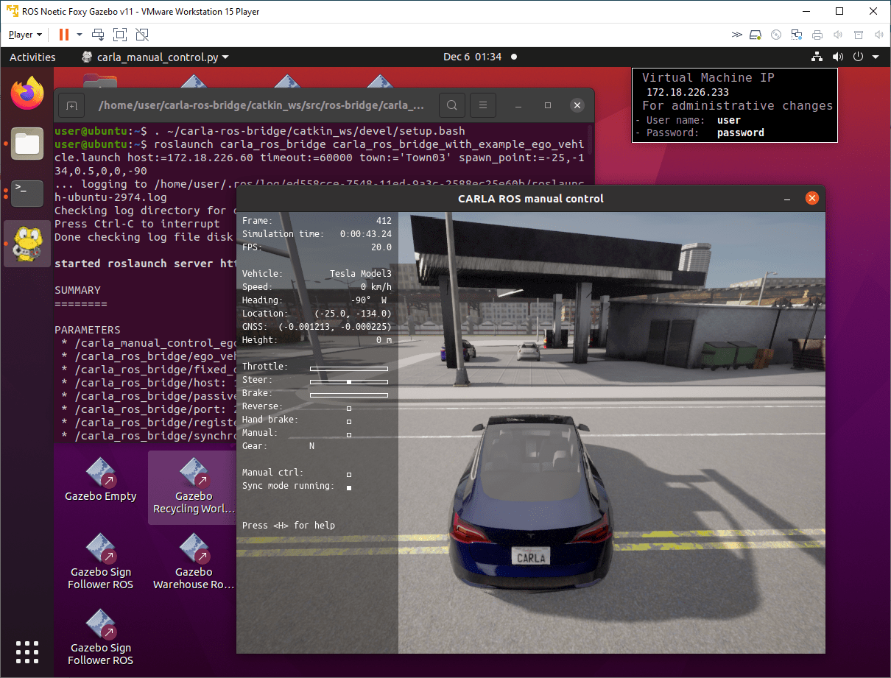

设置并连接到 CARLA 模拟器
此示例展示如何使用 ROS Toolbox 设置并连接到 CARLA 模拟器来模拟自动驾驶应用程序。
您可以利用 CARLA 模拟器复制从城市到高速公路的各种驾驶场景，并在受控虚拟环境中评估其自动驾驶算法的有效性。该模拟器包括各种传感器模型、车辆动力学和交通状况，使用户可以模拟真实世界的设置。您可以使用 Simulink 软件向车辆控制发布者发送转向、制动和油门控制信号，并控制 CARLA Ego 车辆并研究自动驾驶的各种元素。
从 链接 中下载 Carla 0.9.13 版本的模拟器。如果您使用的是 Windows 机器，请同时下载并安装 ROS 虚拟机。此虚拟机基于 Ubuntu Linux 操作系统，并已预先配置为支持使用 ROS Toolbox 构建的应用程序。
此示例在 Windows 主机上演示。
启动 CARLA 服务器
要在 Windows 主机上启动 CARLA 服务器，请导航到 CARLA 的安装位置并单击应用程序可执行文件CarlaUE4.exe。

设置 CARLA ROS Bridge
1.启动虚拟机。
2.在 Ubuntu 桌面上，单击 ROS Noetic Core Terminal 快捷方式以启动 ROS 主控。主控启动后，记下 ROS_MASTER_URI。
3.在 Ubuntu 桌面上，单击 ROS Noetic Terminal 快捷方式以启动 ROS 终端。运行此命令以设置 CARLA ROS 桥接环境。
```shell script
. ~/carla-ros-bridge/catkin_ws/devel/setup.bash

## 使用 CARLA 客户端启动 Ego Vehicle
在同一个终端中，运行follow命令以在您喜欢的 CARLA 模拟器环境中启动 Ego 车辆。例如，您可以follow在 CARLA 模拟器的 Town03 环境中运行命令以在加油站附近启动车辆。
运行此命令将主机地址更改为您的机器的主机地址（您的IP地址一般和这里`172.18.226.60`的不一致）。
```shell script
roslaunch carla_ros_bridge carla_ros_bridge_with_example_ego_vehicle.launch host:=172.18.226.60 timeout:=60000 town:='Town03' spawn_point:=-25,-134,0.5,0,0,-90

验证 CARLA ROS 连接
将 Simulink 连接到在 VM Ware 中运行的 ROS 主机。 ```shell script rosinit( 'http://172.18.226.233:11311' )
通过运行以下自省命令，验证您是否可以访问与 CARLA 模拟器相关的 ROS 主题。
```shell script
rostopic list